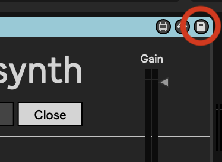

Abacusynth: User Manual
This page details how to use the Abacusynth plugin by Elias Jarzombek
Found a bug or have questions/comments? Please send me an email at
ejarz25[at]pm[dot]me, or find me on
Twitter or Instagram --
Thanks!
Overview
The Abacusynth is a polyphonic synthesizer plugin for Ableton Live. It is fundamentally an additive synthesizer, so you create the sound by adding and manipulating oscillators (as represented by shapes in the interface).
Demo
Here is a compilation of some sounds you can achieve with this plugin.
Controls
When the plugin loads the rods will be empty and it will not make any sound. Build your synth sounds by placing shapes on the rods.
Each shape represents an oscillator. The rod it is on represents its harmonic, so shapes on the lowest rod will oscillate at the fundamental frequency, those on the second rod will oscillate at twice the fundamental, etc. The type of shape represents its waveform (circle -> sine wave, square -> square wave, equilateral triangle -> triangle wave, right triangle -> sawtooth wave).
Each shape/oscillator also has several parameters that can be adjusted. This is done by dragging the shape while holding modifier keys.
Dragging
Moving a shape left or right on the rod adjusts the cutoff frequency of a low pass filter so shapes on the left sound "darker" and shapes on the right sound "brighter". This effect reflected in the UI by displaying the rods as a gradient from dark to light. Moving it up or down changes its harmonic.
SHIFT+Dragging
Hold SHIFT while dragging to control a shape's volume (dragging up/down), as represented by size, and stereo pan effect (dragging right/left), as represented by spin/rotation.
CMD+Dragging
Hold CMD while dragging to adjust a shape's vibrato, as represented by a ruler of varying length (drag right to increase/left to decrease) and divisions (dragging up/down).
Double Click
Double click to delete a shape.This video demonstrates the above controls.
Usage in Ableton
Saving Presets
The device allows you to load several pre-installed presets. However, if you would like to save your own, you can use the built in Ableton Preset system. Click the save icon in the top right of the device to do this.
Recording Automation
One limitation of the device is that changes you make to the shapes are not recorded as automation. To get around this, I recommend recording the track output to a new audio track so that you can save longer evolving progressions.
Changes to the ADSR envelope can be recorded as automation.
Managing the Plugin Window
You can use the tab control on the device to control the plugin window. "Auto" means the plugin window will open when the track is selected, "Close" will keep it closed when switching tracks, and "Open" will keep it open.
More on How it Works

In this diagram we see that four shapes have been placed using the interface. This means that four oscillators are active for each note played. The incoming frequency (the blue note) is multiplied based on the rod that the shapes are located, and the different types of shape each produce different waveforms (as described above). The shape-specific effects also modulate the sound here -- these are described in detail above. The four signals are then combined and fed through the ADSR envelope, the parameters of which are controlled through the interface, and then sent to the output.
This whole process happens for each "voice" of the synth. A voice only operates on one fundamental frequency, so multiple voices are required if we want to play more than one note at the same time -- this is called polyphony. The gray "Voice 2" box is meant to represent the same exact process as Voice 1, but for a different note.